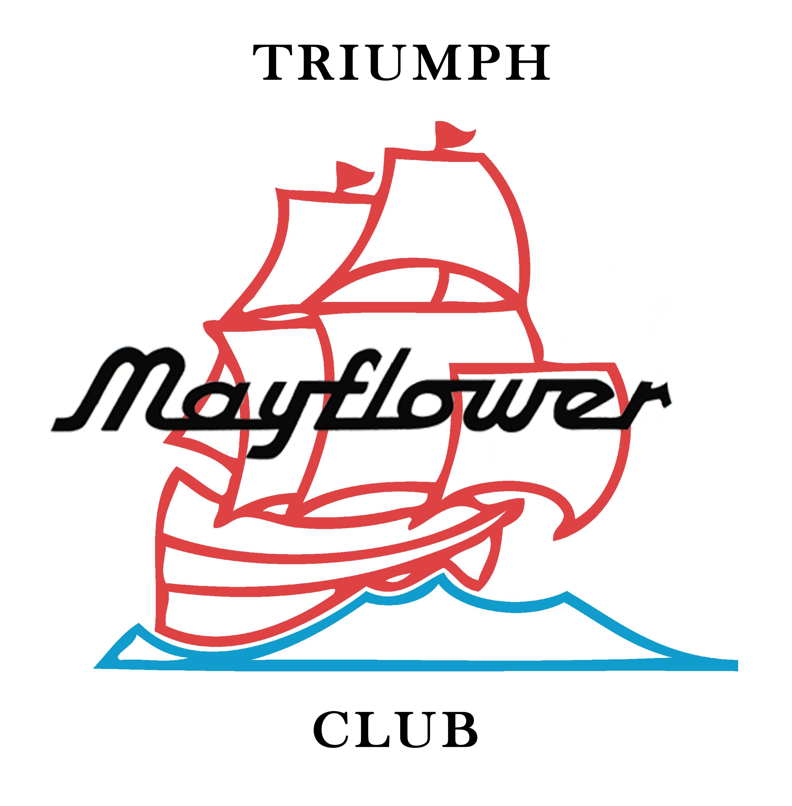
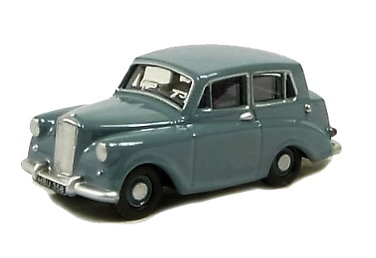

About
The club
The Triumph Mayflower Club, formed in 1974, exists to keep these wonderful and unique vehicles on the road, thus also contributing to motoring heritage for the future. We aim to do this by encouraging ownership, promoting the vehicle to a wider audience and by pooling our enthusiasm, knowledge and known spares supplies. Above all else, we do this by helping each other to look after and improve our cars, and so preserve them for the future.
To read about the history of our club, see the club’s page on the history section.
The Mayflower
The Triumph Mayflower is very traditional in its appearance, but in fact was quite innovative in the way it was designed. Standard-Triumph introduced unity construction, and also included a level of comfort not typical of a small car of the time. Although tastes and styles changed rapidly in the ’50s, those who owned or drove a Mayflower seemed to keep an affection for it right to this day.
The car was aimed at the American market – its name intended to evoke imagery of the journey of the Pilgrim Fathers. Unfortunately for Triumph, the American motor industry moved ahead very quickly after the war, producing much more modern cars. This forced the hand of Standard-Triumph, and the production run of the Mayflower was limited to 35,000 and a very short four years.
To read more about the history of the Triumph Mayflower, visit the car’s page on the history section.
Triumph Motor Company
The history of Standard-Triumph is fascinating, from the beginning of Standard in 1903 to its final demise in 1994. The company was involved in the production of WW2 aeroplanes, as well as the famous ‘Grey Fergie’ tractor. The link between Standard and Triumph, two independent companies, started in 1939 when Standard bought Triumph. Triumph eventually became the dominant name, before being subsumed into British Leyland.
To read more about the history of Standard-Triumph, visit the company’s page on the history section.
Honours boards
Over the years, many members have volunteered to help run our club. Clubs need people who are prepared to give their time to make things happen, and to ensure that as a membership we have the facilities and information we need to keep our cars going.
It is only right and proper, therefore, that their efforts are recorded – not just to say ‘thank you’, but also to record their place in the history of the club (which is now heading into its 45th year).
In the honours boards section, all those holders of positions within the club are recorded. Presently this is incomplete, but as time allows and more information becomes available to the editor, these will be completed all the way back to 1974.
Mayflowers around the world
The Triumph Mayflower, our much-loved car, is to be found in many parts of the world; in fact members have, over the years, come from all continents, with the exception of Antarctica (where, remarkably, very few cars are to be found).
Visit the “Around the world of Mayflowers” section to find articles about the Triumph Mayflower scene in various parts of the world throughout the years. It also provides members who aren’t based within the UK with a more specific platform to address members in their own patch, as well as the rest of us.
Mayflowers in museums
This section is very much in its infancy, and I, as the website editor, am asking for the help of all members around the world. If you know of the location of any museum which owns and/or exhibits one of our precious cars, I would love to hear from you!